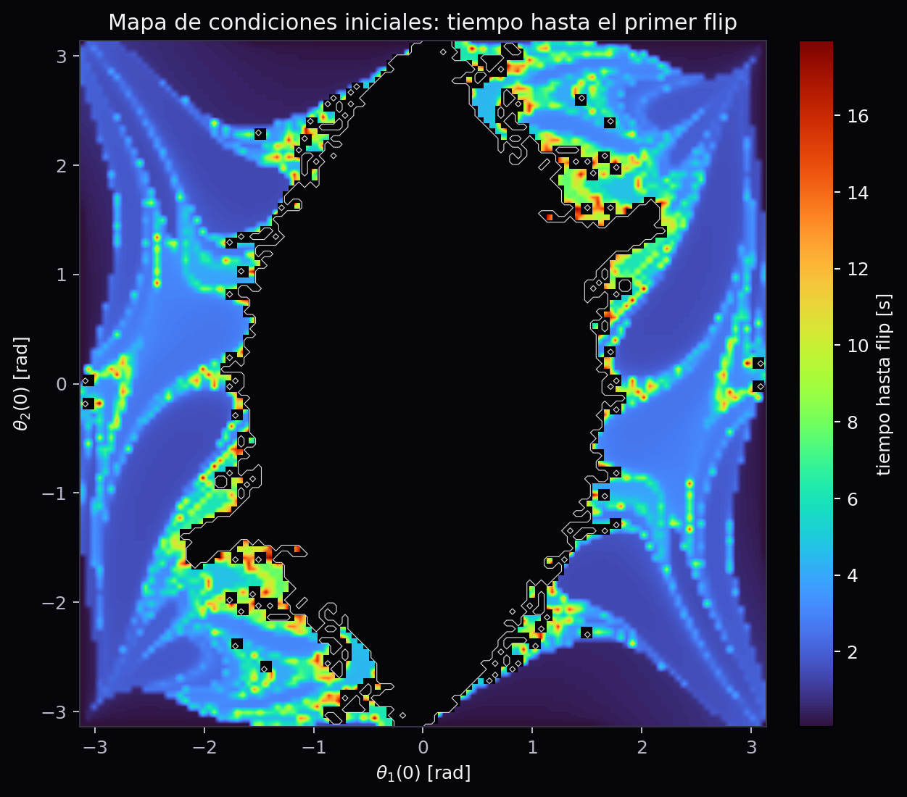

0:00 - Hook
Mismas leyes, futuros distintos
Una diferencia inicial de 1e-6 rad puede volverse macroscopica.
0:25 - Fisica I base
Primero, el caso ordenado
El pendulo simple conecta angulo, velocidad angular, gravedad y energia.
omega = d theta / dt
sin(theta) ~= theta
0:55 - Segunda masa
Agregar una barra cambia el juego
El estado pasa de una coordenada a cuatro variables acopladas.
s(t) = [theta1, omega1, theta2, omega2]
1:25 - Simulacion numerica
Resolver, no dibujar a mano
solve_ivp integra el sistema como problema de valor inicial.
2:05 - Control de calidad
La energia total casi no se mueve
Si el integrador inventara energia, no podriamos confiar en el caos observado.
2:45 - Sensibilidad
Delta(t) crece
Medimos la separacion entre dos estados casi identicos en escala logaritmica.

3:35 - Observable finale
Un mapa de futuros
Color = tiempo hasta el primer flip. Las fronteras revelan sensibilidad.
4:35 - Cierre
Deterministico no significa predecible
La fisica da las reglas. La computacion revela sus consecuencias.
Fisica I + Calculo I + EDOs + visualizacion cientifica